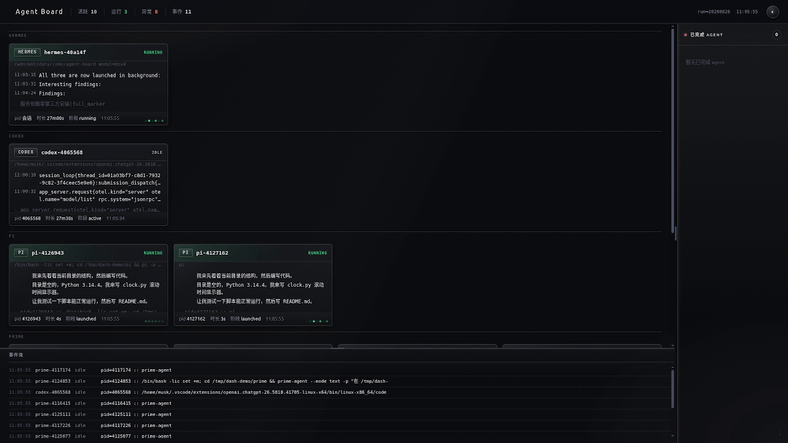
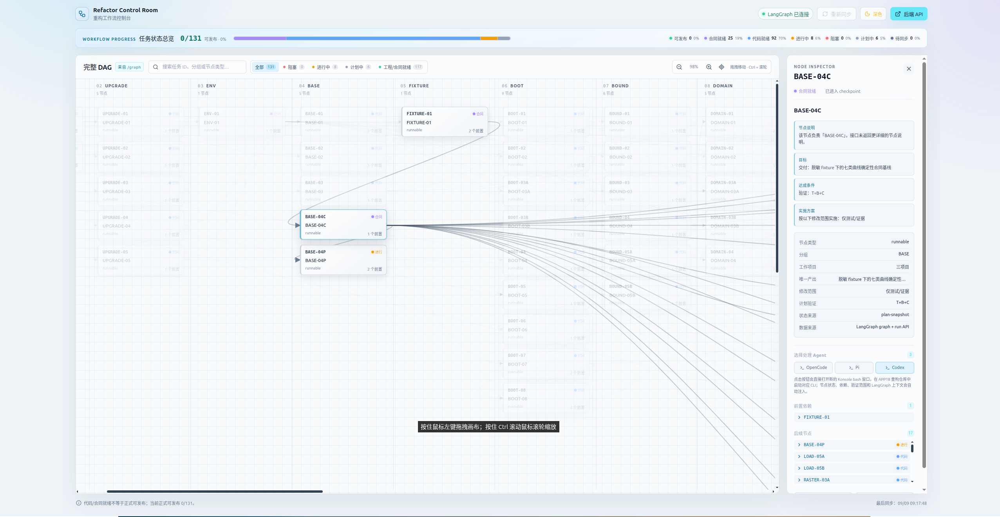
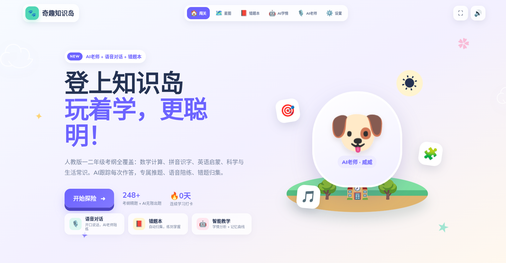

01 · agent-board
把多个 Agent 放在一张看板上
一个零第三方依赖的本地 AI Agent 实时看板，自动发现 Codex、Prime、Pi、OpenCode、Hermes 等 Agent，集中展示运行状态、活动流和完成任务。
自动发现实时状态本机处理
查看 agent-board ↗同样是 Agent，既可以做本机状态看板，也可以管理复杂工程，还可以进入儿童学习产品。关键不是模型名字，而是它有没有接进真实工作流。

一个零第三方依赖的本地 AI Agent 实时看板，自动发现 Codex、Prime、Pi、OpenCode、Hermes 等 Agent，集中展示运行状态、活动流和完成任务。

React + Vite + LangGraph 的重构控制台，动态读取 131 个业务节点、依赖边和执行状态，选中节点后还能把上下文交给 OpenCode、Pi 或 Codex。

面向小学生的多学科答题闯关项目。Agent 先读取真实学情、错题和课程目录，再规划练习、调用白名单工具，最后给出讲解、出题和复习建议。
Agent Board 让你知道有哪些 Agent 在工作、卡在哪里。
LangGraph 看板把复杂任务拆成节点、依赖、状态和证据。
Kids Quiz 把上下文、工具、权限和降级接成产品能力。
“这里分享我自己的三个 GitHub 项目。第一个 Agent Board 解决的是看见多个 Agent；第二个 LangGraph 控制台解决的是组织复杂工程；第三个 Kids Quiz 则是把 Agent 放进一个真实产品。”
“大家看 Agent 项目，不要停留在模型和界面。真正决定能不能交付的是上下文、工具、权限、验证和降级。”
“你们自己的项目也可以按这条路线开始：先让 Agent 读懂一个仓库，再让它完成一个小改动，跑测试，最后把方法沉淀下来。”